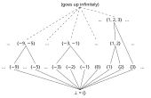
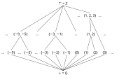
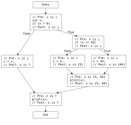
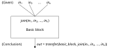
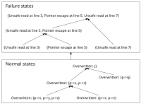
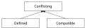

Data flow analysis: an informal introduction¶
Abstract¶
This document introduces data flow analysis in an informal way. The goal is to give the reader an intuitive understanding of how it works, and show how it applies to a range of refactoring and bug finding problems.
Data flow analysis is a well-established technique; it is described in many papers, books, and videos. If you would like a more formal, or a more thorough explanation of the concepts mentioned in this document, please refer to the following resources:
Videos on the PacketPrep YouTube channel that introduce lattices and the necessary background information: #20, #21, #22, #23, #24, #25.
Static Program Analysis by Anders Møller and Michael I. Schwartzbach.
EXE: automatically generating inputs of death (a paper that successfully applies symbolic execution to real-world software).
Data flow analysis¶
The purpose of data flow analysis¶
Data flow analysis is a static analysis technique that proves facts about a program or its fragment. It can make conclusions about all paths through the program, while taking control flow into account and scaling to large programs. The basic idea is propagating facts about the program through the edges of the control flow graph (CFG) until a fixpoint is reached.
Sample problem and an ad-hoc solution¶
We would like to explain data flow analysis while discussing an example. Let's imagine that we want to track possible values of an integer variable in our program. Here is how a human could annotate the code:
void Example(int n) {
int x = 0;
// x is {0}
if (n > 0) {
x = 5;
// x is {5}
} else {
x = 42;
// x is {42}
}
// x is {5; 42}
print(x);
}
We use sets of integers to represent possible values of x. Local variables
have unambiguous values between statements, so we annotate program points
between statements with sets of possible values.
Here is how we arrived at these annotations. Assigning a constant to x allows
us to make a conclusion that x can only have one value. When control flow from
the "then" and "else" branches joins, x can have either value.
Abstract algebra provides a nice formalism that models this kind of structure, namely, a lattice. A join-semilattice is a partially ordered set, in which every two elements have a least upper bound (called a join).
join(a, b) ⩾ a and join(a, b) ⩾ b and join(x, x) = x
For this problem we will use the lattice of subsets of integers, with set inclusion relation as ordering and set union as a join.
Lattices are often represented visually as Hasse diagrams. Here is a Hasse diagram for our lattice that tracks subsets of integers:

Computing the join in the lattice corresponds to finding the lowest common ancestor (LCA) between two nodes in its Hasse diagram. There is a vast amount of literature on efficiently implementing LCA queries for a DAG, however Efficient Implementation of Lattice Operations (1989) (CiteSeerX, doi) describes a scheme that particularly well-suited for programmatic implementation.
Too much information and "top" values¶
Let's try to find the possible sets of values of x in a function that modifies
x in a loop:
void ExampleOfInfiniteSets() {
int x = 0; // x is {0}
while (condition()) {
x += 1; // x is {0; 1; 2; …}
}
print(x); // x is {0; 1; 2; …}
}
We have an issue: x can have any value greater than zero; that's an infinite
set of values, if the program operated on mathematical integers. In C++ int is
limited by INT_MAX so technically we have a set {0; 1; …; INT_MAX} which is
still really big.
To make our analysis practical to compute, we have to limit the amount of
information that we track. In this case, we can, for example, arbitrarily limit
the size of sets to 3 elements. If at a certain program point x has more than
3 possible values, we stop tracking specific values at that program point.
Instead, we denote possible values of x with the symbol ⊤ (pronounced "top"
according to a convention in abstract algebra).
void ExampleOfTopWithALoop() {
int x = 0; // x is {0}
while (condition()) {
x += 1; // x is ⊤
}
print(x); // x is ⊤
}
The statement "at this program point, x's possible values are ⊤" is
understood as "at this program point x can have any value because we have too
much information, or the information is conflicting".
Note that we can get more than 3 possible values even without a loop:
void ExampleOfTopWithoutLoops(int n) {
int x = 0; // x is {0}
switch(n) {
case 0: x = 1; break; // x is {1}
case 1: x = 9; break; // x is {9}
case 2: x = 7; break; // x is {7}
default: x = 3; break; // x is {3}
}
// x is ⊤
}
Uninitialized variables and "bottom" values¶
When x is declared but not initialized, it has no possible values. We
represent this fact symbolically as ⊥ (pronounced "bottom").
void ExampleOfBottom() {
int x; // x is ⊥
x = 42; // x is {42}
print(x);
}
Note that using values read from uninitialized variables is undefined behaviour in C++. Generally, compilers and static analysis tools can assume undefined behavior does not happen. We must model uninitialized variables only when we are implementing a checker that specifically is trying to find uninitialized reads. In this example we show how to model uninitialized variables only to demonstrate the concept of "bottom", and how it applies to possible value analysis. We describe an analysis that finds uninitialized reads in a section below.
A practical lattice that tracks sets of concrete values¶
Taking into account all corner cases covered above, we can put together a lattice that we can use in practice to track possible values of integer variables. This lattice represents sets of integers with 1, 2, or 3 elements, as well as top and bottom. Here is a Hasse diagram for it:

Formalization¶
Let's consider a slightly more complex example, and think about how we can compute the sets of possible values algorithmically.
void Example(int n) {
int x; // x is ⊥
if (n > 0) {
if (n == 42) {
x = 44; // x is {44}
} else {
x = 5; // x is {5}
}
print(x); // x is {44; 5}
} else {
x = n; // x is ⊤
}
print(x); // x is ⊤
}
As humans, we understand the control flow from the program text. We used our understanding of control flow to find program points where two flows join. Formally, control flow is represented by a CFG (control flow graph):

We can compute sets of possible values by propagating them through the CFG of the function:
When
xis declared but not initialized, its possible values are{}. The empty set plays the role of⊥in this lattice.When
xis assigned a concrete value, its possible set of values contains just that specific value.When
xis assigned some unknown value, it can have any value. We represent this fact as⊤.When two control flow paths join, we compute the set union of incoming values (limiting the number of elements to 3, representing larger sets as
⊤).
The sets of possible values are influenced by:
Statements, for example, assignments.
Joins in control flow, for example, ones that appear at the end of "if" statements.
Effects of statements are modeled by what is formally known as a transfer
function. A transfer function takes two arguments: the statement, and the state
of x at the previous program point. It produces the state of x at the next
program point. For example, the transfer function for assignment ignores the
state at the previous program point:
// GIVEN: x is {42; 44}
x = 0;
// CONCLUSION: x is {0}
The transfer function for + performs arithmetic on every set member:
// GIVEN: x is {42, 44}
x = x + 100;
// CONCLUSION: x is {142, 144}
Effects of control flow are modeled by joining the knowledge from all possible previous program points.
if (...) {
...
// GIVEN: x is {42}
} else {
...
// GIVEN: x is {44}
}
// CONCLUSION: x is {42; 44}
// GIVEN: x is {42}
while (...) {
...
// GIVEN: x is {44}
}
// CONCLUSION: {42; 44}
The predicate that we marked "given" is usually called a precondition, and the conclusion is called a postcondition.
In terms of the CFG, we join the information from all predecessor basic blocks.

Putting it all together, to model the effects of a basic block we compute:
out = transfer(basic_block, join(in_1, in_2, ..., in_n))
(Note that there are other ways to write this equation that produce higher precision analysis results. The trick is to keep exploring the execution paths separately and delay joining until later. However, we won't discuss those variations here.)
To make a conclusion about all paths through the program, we repeat this computation on all basic blocks until we reach a fixpoint. In other words, we keep propagating information through the CFG until the computed sets of values stop changing.
If the lattice has a finite height and transfer functions are monotonic the
algorithm is guaranteed to terminate. Each iteration of the algorithm can
change computed values only to larger values from the lattice. In the worst
case, all computed values become ⊤, which is not very useful, but at least the
analysis terminates at that point, because it can't change any of the values.
Fixpoint iteration can be optimised by only reprocessing basic blocks which had
one of their inputs changed on the previous iteration. This is typically
implemented using a worklist queue. With this optimisation the time complexity
becomes O(m * |L|), where m is the number of basic blocks in the CFG and
|L| is the size of lattice used by the analysis.
Symbolic execution: a very short informal introduction¶
Symbolic values¶
In the previous example where we tried to figure out what values a variable can have, the analysis had to be seeded with a concrete value. What if there are no assignments of concrete values in the program? We can still deduce some interesting information by representing unknown input values symbolically, and computing results as symbolic expressions:
void PrintAbs(int x) {
int result;
if (x >= 0) {
result = x; // result is {x}
} else {
result = -x; // result is {-x}
}
print(result); // result is {x; -x}
}
We can't say what specific value gets printed, but we know that it is either x
or -x.
Dataflow analysis is an instance of abstract interpretation, and does not dictate how exactly the lattice and transfer functions should be designed, beyond the necessary conditions for the analysis to converge. Nevertheless, we can use symbolic execution ideas to guide our design of the lattice and transfer functions: lattice values can be symbolic expressions, and transfer functions can construct more complex symbolic expressions from symbolic expressions that represent arguments. See this StackOverflow discussion for a further comparison of abstract interpretation and symbolic execution.
Flow condition¶
A human can say about the previous example that the function returns x when
x >= 0, and -x when x < 0. We can make this conclusion programmatically by
tracking a flow condition. A flow condition is a predicate written in terms of
the program state that is true at a specific program point regardless of the
execution path that led to this statement. For example, the flow condition for
the program point right before evaluating result = x is x >= 0.
If we enhance the lattice to be a set of pairs of values and predicates, the dataflow analysis computes the following values:
void PrintAbs(int x) {
int result;
if (x >= 0) {
// Flow condition: x >= 0.
result = x; // result is {x if x >= 0}
} else {
// Flow condition: x < 0.
result = -x; // result is {-x if x < 0}
}
print(result); // result is {x if x >= 0; -x if x < 0}
}
Of course, in a program with loops, symbolic expressions for flow conditions can grow unbounded. A practical static analysis system must control this growth to keep the symbolic representations manageable and ensure that the data flow analysis terminates. For example, it can use a constraint solver to prune impossible flow conditions, and/or it can abstract them, losing precision, after their symbolic representations grow beyond some threshold. This is similar to how we had to limit the sizes of computed sets of possible values to 3 elements.
Symbolic pointers¶
This approach proves to be particularly useful for modeling pointer values, since we don't care about specific addresses but just want to give a unique identifier to a memory location.
void ExampleOfSymbolicPointers(bool b) {
int x = 0; // x is {0}
int* ptr = &x; // x is {0} ptr is {&x}
if (b) {
*ptr = 42; // x is {42} ptr is {&x}
}
print(x); // x is {0; 42} ptr is {&x}
}
Example: finding output parameters¶
Let's explore how data flow analysis can help with a problem that is hard to solve with other tools in Clang.
Problem description¶
Output parameters are function parameters of pointer or reference type whose pointee is completely overwritten by the function, and not read before it is overwritten. They are common in pre-C++11 code due to the absence of move semantics. In modern C++ output parameters are non-idiomatic, and return values are used instead.
Imagine that we would like to refactor output parameters to return values to modernize old code. The first step is to identify refactoring candidates through static analysis.
For example, in the following code snippet the pointer c is an output
parameter:
struct Customer {
int account_id;
std::string name;
}
void GetCustomer(Customer *c) {
c->account_id = ...;
if (...) {
c->name = ...;
} else {
c->name = ...;
}
}
We would like to refactor this code into:
Customer GetCustomer() {
Customer c;
c.account_id = ...;
if (...) {
c.name = ...;
} else {
c.name = ...;
}
return c;
}
However, in the function below the parameter c is not an output parameter
because its field name is not overwritten on every path through the function.
void GetCustomer(Customer *c) {
c->account_id = ...;
if (...) {
c->name = ...;
}
}
The code also cannot read the value of the parameter before overwriting it:
void GetCustomer(Customer *c) {
use(c->account_id);
c->name = ...;
c->account_id = ...;
}
Functions that escape the pointer also block the refactoring:
Customer* kGlobalCustomer;
void GetCustomer(Customer *c) {
c->name = ...;
c->account_id = ...;
kGlobalCustomer = c;
}
To identify a candidate function for refactoring, we need to do the following:
Find a function with a non-const pointer or reference parameter.
Find the definition of that function.
Prove that the function completely overwrites the pointee on all paths before returning.
Prove that the function reads the pointee only after overwriting it.
Prove that the function does not persist the pointer in a data structure that is live after the function returns.
There are also requirements that all usage sites of the candidate function must satisfy, for example, that function arguments do not alias, that users are not taking the address of the function, and so on. Let's consider verifying usage site conditions to be a separate static analysis problem.
Lattice design¶
To analyze the function body we can use a lattice which consists of normal states and failure states. A normal state describes program points where we are sure that no behaviors that block the refactoring have occurred. Normal states keep track of all parameter's member fields that are known to be overwritten on every path from function entry to the corresponding program point. Failure states accumulate observed violations (unsafe reads and pointer escapes) that block the refactoring.
In the partial order of the lattice failure states compare greater than normal
states, which guarantees that they "win" when joined with normal states. Order
between failure states is determined by inclusion relation on the set of
accumulated violations (lattice's ⩽ is ⊆ on the set of violations). Order
between normal states is determined by reversed inclusion relation on the set of
overwritten parameter's member fields (lattice's ⩽ is ⊇ on the set of
overwritten fields).

To determine whether a statement reads or writes a field we can implement
symbolic evaluation of DeclRefExprs, LValueToRValue casts, pointer
dereference operator and MemberExprs.
Using data flow results to identify output parameters¶
Let's take a look at how we use data flow analysis to identify an output parameter. The refactoring can be safely done when the data flow algorithm computes a normal state with all of the fields proven to be overwritten in the exit basic block of the function.
struct Customer {
int account_id;
std::string name;
};
void GetCustomer(Customer* c) {
// Overwritten: {}
c->account_id = ...; // Overwritten: {c->account_id}
if (...) {
c->name = ...; // Overwritten: {c->account_id, c->name}
} else {
c->name = ...; // Overwritten: {c->account_id, c->name}
}
// Overwritten: {c->account_id, c->name}
}
When the data flow algorithm computes a normal state, but not all fields are proven to be overwritten we can't perform the refactoring.
void target(bool b, Customer* c) {
// Overwritten: {}
if (b) {
c->account_id = 42; // Overwritten: {c->account_id}
} else {
c->name = "Konrad"; // Overwritten: {c->name}
}
// Overwritten: {}
}
Similarly, when the data flow algorithm computes a failure state, we also can't perform the refactoring.
Customer* kGlobalCustomer;
void GetCustomer(Customer* c) {
// Overwritten: {}
c->account_id = ...; // Overwritten: {c->account_id}
if (...) {
print(c->name); // Unsafe read
} else {
kGlobalCustomer = c; // Pointer escape
}
// Unsafe read, Pointer escape
}
Example: finding dead stores¶
Let's say we want to find redundant stores, because they indicate potential bugs.
x = GetX();
x = GetY();
The first store to x is never read, probably there is a bug.
The implementation of dead store analysis is very similar to output parameter analysis: we need to track stores and loads, and find stores that were never read.
Liveness analysis is a generalization of this idea, which is often used to answer many related questions, for example:
finding dead stores,
finding uninitialized variables,
finding a good point to deallocate memory,
finding out if it would be safe to move an object.
Example: definitive initialization¶
Definitive initialization proves that variables are known to be initialized when read. If we find a variable which is read when not initialized then we generate a warning.
void Init() {
int x; // x is uninitialized
if (cond()) {
x = 10; // x is initialized
} else {
x = 20; // x is initialized
}
print(x); // x is initialized
}
void Uninit() {
int x; // x is uninitialized
if (cond()) {
x = 10; // x is initialized
}
print(x); // x is maybe uninitialized, x is being read, report a bug.
}
For this purpose we can use lattice in a form of a mapping from variable declarations to initialization states; each initialization state is represented by the following lattice:
A lattice element could also capture the source locations of the branches that lead us to the corresponding program point. Diagnostics would use this information to show a sample buggy code path to the user.
Example: refactoring raw pointers to unique_ptr¶
Modern idiomatic C++ uses smart pointers to express memory ownership, however in pre-C++11 code one can often find raw pointers that own heap memory blocks.
Imagine that we would like to refactor raw pointers that own memory to
unique_ptr. There are multiple ways to design a data flow analysis for this
problem; let's look at one way to do it.
For example, we would like to refactor the following code that uses raw pointers:
void UniqueOwnership1() {
int *pi = new int;
if (...) {
Borrow(pi);
delete pi;
} else {
TakeOwnership(pi);
}
}
into code that uses unique_ptr:
void UniqueOwnership1() {
auto pi = std::make_unique<int>();
if (...) {
Borrow(pi.get());
} else {
TakeOwnership(pi.release());
}
}
This problem can be solved with a lattice in form of map from value declarations to pointer states:

We can perform the refactoring if at the exit of a function pi is
Compatible.
void UniqueOwnership1() {
int *pi; // pi is Compatible
pi = new int; // pi is Defined
if (...) {
Borrow(pi); // pi is Defined
delete pi; // pi is Compatible
} else {
TakeOwnership(pi); // pi is Compatible
}
// pi is Compatible
}
Let's look at an example where the raw pointer owns two different memory blocks:
void UniqueOwnership2() {
int *pi = new int; // pi is Defined
Borrow(pi);
delete pi; // pi is Compatible
if (smth) {
pi = new int; // pi is Defined
Borrow(pi);
delete pi; // pi is Compatible
}
// pi is Compatible
}
It can be refactored to use unique_ptr like this:
void UniqueOwnership2() {
auto pi = make_unique<int>();
Borrow(pi);
if (smth) {
pi = make_unique<int>();
Borrow(pi);
}
}
In the following example, the raw pointer is used to access the heap object after the ownership has been transferred.
void UniqueOwnership3() {
int *pi = new int; // pi is Defined
if (...) {
Borrow(pi);
delete pi; // pi is Compatible
} else {
vector<unique_ptr<int>> v = {std::unique_ptr(pi)}; // pi is Compatible
print(*pi);
use(v);
}
// pi is Compatible
}
We can refactor this code to use unique_ptr, however we would have to
introduce a non-owning pointer variable, since we can't use the moved-from
unique_ptr to access the object:
void UniqueOwnership3() {
std::unique_ptr<int> pi = std::make_unique<int>();
if (...) {
Borrow(pi);
} else {
int *pi_non_owning = pi.get();
vector<unique_ptr<int>> v = {std::move(pi)};
print(*pi_non_owning);
use(v);
}
}
If the original code didn't call delete at the very end of the function, then
our refactoring may change the point at which we run the destructor and release
memory. Specifically, if there is some user code after delete, then extending
the lifetime of the object until the end of the function may hold locks for
longer than necessary, introduce memory overhead etc.
One solution is to always replace delete with a call to reset(), and then
perform another analysis that removes unnecessary reset() calls.
void AddedMemoryOverhead() {
HugeObject *ho = new HugeObject();
use(ho);
delete ho; // Release the large amount of memory quickly.
LongRunningFunction();
}
This analysis will refuse to refactor code that mixes borrowed pointer values
and unique ownership. In the following code, GetPtr() returns a borrowed
pointer, which is assigned to pi. Then, pi is used to hold a uniquely-owned
pointer. We don't distinguish between these two assignments, and we want each
assignment to be paired with a corresponding sink; otherwise, we transition the
pointer to a Conflicting state, like in this example.
void ConflictingOwnership() {
int *pi; // pi is Compatible
pi = GetPtr(); // pi is Defined
Borrow(pi); // pi is Defined
pi = new int; // pi is Conflicting
Borrow(pi);
delete pi;
// pi is Conflicting
}
We could still handle this case by finding a maximal range in the code where
pi could be in the Compatible state, and only refactoring that part.
void ConflictingOwnership() {
int *pi;
pi = GetPtr();
Borrow(pi);
std::unique_ptr<int> pi_unique = std::make_unique<int>();
Borrow(pi_unique.get());
}
Example: finding redundant branch conditions¶
In the code below b1 should not be checked in both the outer and inner "if"
statements. It is likely there is a bug in this code.
int F(bool b1, bool b2) {
if (b1) {
f();
if (b1 && b2) { // Check `b1` again -- unnecessary!
g();
}
}
}
A checker that finds this pattern syntactically is already implemented in
ClangTidy using AST matchers (bugprone-redundant-branch-condition).
To implement it using the data flow analysis framework, we can produce a warning if any part of the branch condition is implied by the flow condition.
int F(bool b1, bool b2) {
// Flow condition: true.
if (b1) {
// Flow condition: b1.
f();
if (b1 && b2) { // `b1` is implied by the flow condition.
g();
}
}
}
One way to check this implication is to use a SAT solver. Without a SAT solver, we could keep the flow condition in the CNF form and then it would be easy to check the implication.
Example: finding unchecked std::optional unwraps¶
Calling optional::value() is only valid if optional::has_value() is true. We
want to show that when x.value() is executed, the flow condition implies
x.has_value().
In the example below x.value() is accessed safely because it is guarded by the
x.has_value() check.
void Example(std::optional<int> &x) {
if (x.has_value()) {
use(x.value());
}
}
While entering the if branch we deduce that x.has_value() is implied by the
flow condition.
void Example(std::optional<int> x) {
// Flow condition: true.
if (x.has_value()) {
// Flow condition: x.has_value() == true.
use(x.value());
}
// Flow condition: true.
}
We also need to prove that x is not modified between check and value access.
The modification of x may be very subtle:
void F(std::optional<int> &x);
void Example(std::optional<int> &x) {
if (x.has_value()) {
// Flow condition: x.has_value() == true.
unknown_function(x); // may change x.
// Flow condition: true.
use(x.value());
}
}
Example: finding dead code behind A/B experiment flags¶
Finding dead code is a classic application of data flow analysis.
Unused flags for A/B experiment hide dead code. However, this flavor of dead code is invisible to the compiler because the flag can be turned on at any moment.
We could make a tool that deletes experiment flags. The user tells us which flag they want to delete, and we assume that the it's value is a given constant.
For example, the user could use the tool to remove example_flag from this
code:
DEFINE_FLAG(std::string, example_flag, "", "A sample flag.");
void Example() {
bool x = GetFlag(FLAGS_example_flag).empty();
f();
if (x) {
g();
} else {
h();
}
}
The tool would simplify the code to:
void Example() {
f();
g();
}
We can solve this problem with a classic constant propagation lattice combined with symbolic evaluation.
Example: finding inefficient usages of associative containers¶
Real-world code often accidentally performs repeated lookups in associative containers:
map<int, Employee> xs;
xs[42]->name = "...";
xs[42]->title = "...";
To find the above inefficiency we can use the available expressions analysis to
understand that m[42] is evaluated twice.
map<int, Employee> xs;
Employee &e = xs[42];
e->name = "...";
e->title = "...";
We can also track the m.contains() check in the flow condition to find
redundant checks, like in the example below.
std::map<int, Employee> xs;
if (!xs.contains(42)) {
xs.insert({42, someEmployee});
}
Example: refactoring types that implicitly convert to each other¶
Refactoring one strong type to another is difficult, but the compiler can help:
once you refactor one reference to the type, the compiler will flag other places
where this information flows with type mismatch errors. Unfortunately this
strategy does not work when you are refactoring types that implicitly convert to
each other, for example, replacing int32_t with int64_t.
Imagine that we want to change user IDs from 32 to 64-bit integers. In other words, we need to find all integers tainted with user IDs. We can use data flow analysis to implement taint analysis.
void UseUser(int32_t user_id) {
int32_t id = user_id;
// Variable `id` is tainted with a user ID.
...
}
Taint analysis is very well suited to this problem because the program rarely branches on user IDs, and almost certainly does not perform any computation (like arithmetic).